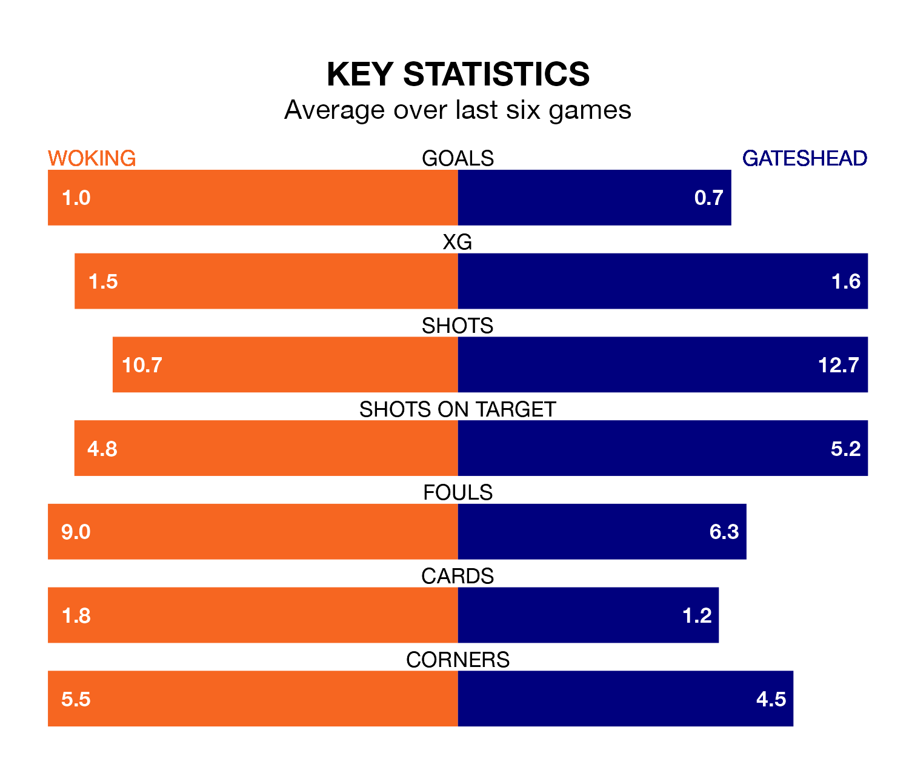

Woking host Gateshead on Tuesday at the Laithwaite Community Stadium in National League.
In their last league match, on January 6, Woking lost to Solihull Moors 3-0 away.
Gateshead also lost, 5-0 away at Chesterfield on Wednesday.
With 28 goals in 27 games so far this season, Woking are the league's joint-third-lowest scorers with 1.0 goals per game. But they are conceding fewer than average too, letting in 37 goals at a rate of 1.4 per game.
Gateshead, meanwhile, are above average scorers, with 1.9 goals per game, compared to a league average of 1.5. They have conceded 1.5 goals per game.
In the last 10 years, Woking and Gateshead have played each other on 12 occasions. Woking won eight of them, Gateshead one, and they drew three times.
On average, the Cardinals scored 2.2 goals and the Tynesiders 0.8 in those matches.
Their last meeting was on August 26, when Woking won 3-1 away.
The Cardinals are 20th in the table after 27 games, of which they have won seven and drawn six, earning 27 points.
The Tynesiders are 11 places ahead of the hosts in ninth, with 11 wins and seven draws putting them on 40 points.
Woking are in disappointing form in National League, with one win and two draws from their last six games.
And also with a win and two draws over that period, the away team's form is identical – they have both taken five points from 18.
Updated: 14:53 (UTC), 16/01/24